In the original Ben 10 series, Ben Tennyson can transform into ten different aliens using the Omnitrix. Each alien has its own powers and strengths. The Aliens the Omnitrix chooses is always the alien which is rightly suited for this situation every time Ben Tennyson goes "Hero" it's always a alien that he needs not always a alien he want's.
Heatblast is a Pyronite who can create and control fire.
Wildmutt is a beast-like alien with no eyes but amazing smell and hearing.
Diamondhead is made of crystal and can make sharp weapons or protective shields.
XLR8 is super fast and can move faster than anyone can see.
Four Arms is very strong and uses his four arms to fight enemies
Grey Matter is tiny but extremely smart, perfect for solving tricky problems.
Upgrade can merge with technology and make machines stronger.
Ripjaws lives underwater and has strong jaws and great swimming skills.
Stinkfly can fly, shoot slime, and carry others while in the air.
Ghostfreak can turn invisible, pass through walls, and even possess other beings.
These ten ALIENS give Ben a wide variety of powers. Together, they help him fight bad guys, protect the world, and solve problems in creative ways.
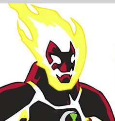 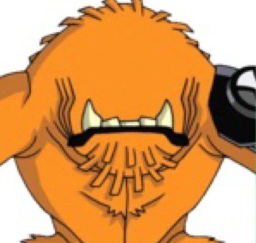 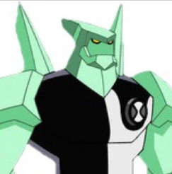 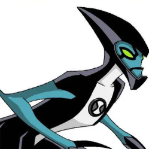 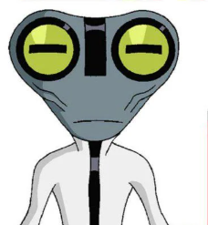
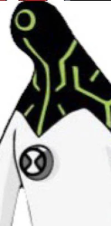
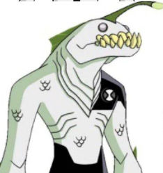
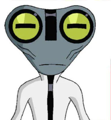
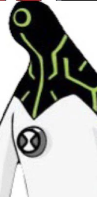
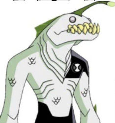
 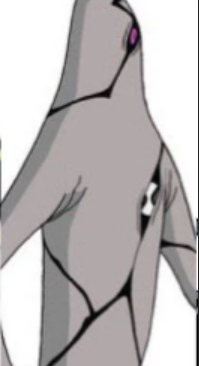
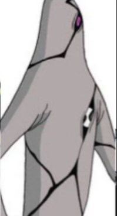